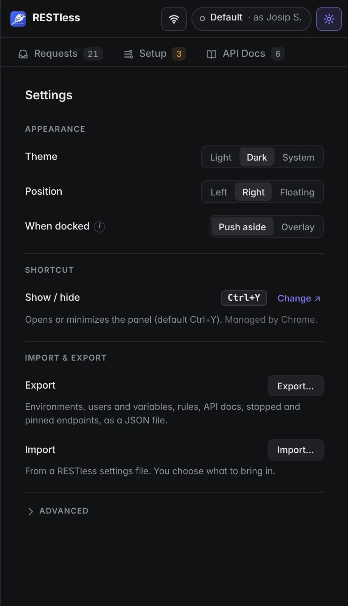
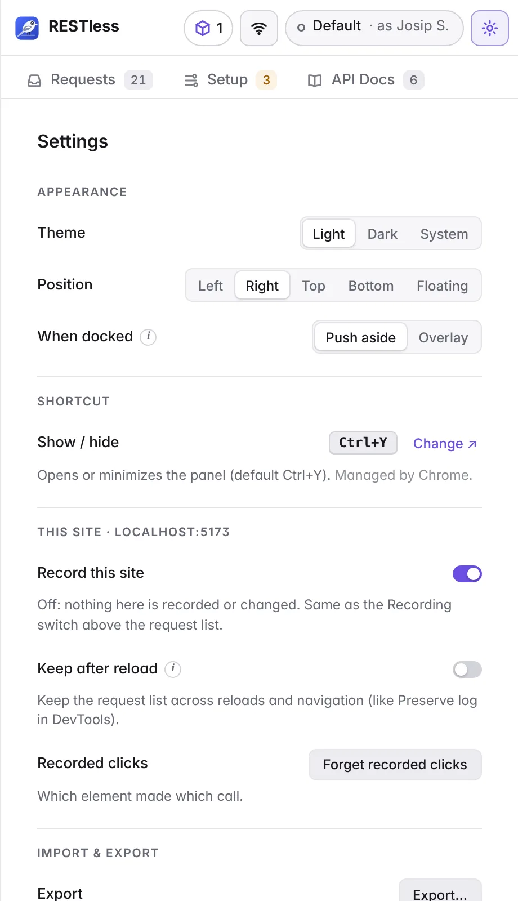
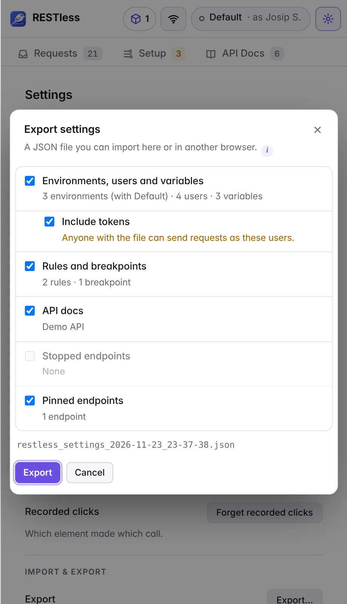

Settings
Theme, panel position, shortcut, and sharing your setup.




Look and feel
Choose light, dark or system, and dock the panel left, right, top or bottom, or let it float. Request count on icon turns the number on the toolbar icon on or off.
Shortcut
Ctrl+Y shows and hides the panel. Change it with Change ↗ (Chrome’s shortcut page).
Import & export
Export… saves your environments and users, rules, mocks, API docs and pinned endpoints as one JSON file. Import… brings them back here or in another browser, and can be undone.
Careful: tokens are in the file when Include tokens is on. Share it only with people who should have them.